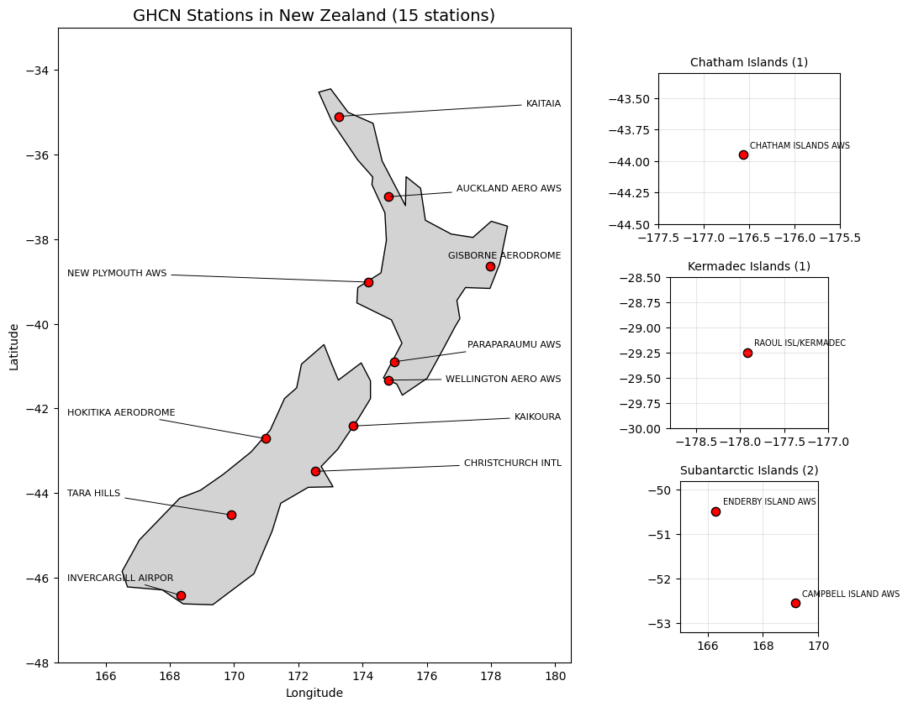
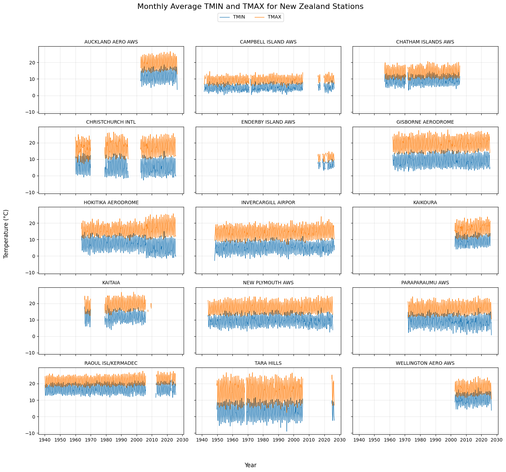
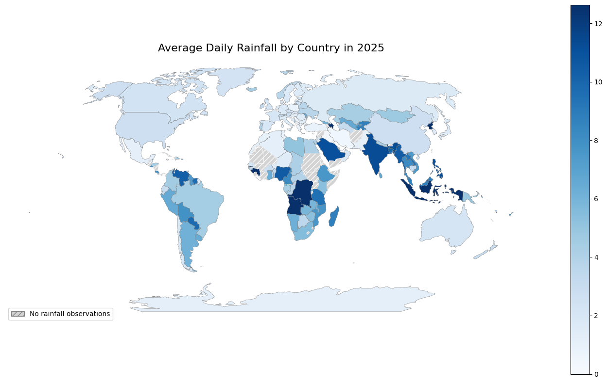

Exploratory & Statistical Analysis · University project
Climate Data Analysis & Data Quality
Processing billions of weather observations with PySpark, investigating unexpected records and communicating what the data can—and cannot—tell us.
PySpark · Apache Spark · Azure Blob Storage · Parquet
Project overview
This individual DATA420 Scalable Data Science project at the University of Canterbury used NOAA’s Global Historical Climatology Network Daily dataset. The supplied Azure snapshot contained daily observations and metadata for stations, countries, states and recorded elements.
The aim was to build reliable datasets for analysis, examine station coverage and climate observations, and create interpretable visualisations while working within distributed-computing memory limits.
Completed in September 2026. Counts describe the supplied snapshot, rather than the continuously updated live dataset. The raw total includes the subsequently excluded 1750 file.
Featured data quality investigation
An unexpected file led back to the data provider
A file labelled 1750 was unusually large compared with other early years. It contained 344,589 observations from 3,570 Australian stations, whose inventory periods did not cover that year.
I investigated the dates and station metadata, then contacted the GHCN-Daily team at NOAA-NCEI rather than assuming the records were valid or deleting them without explanation. As documented in my report, NOAA confirmed a temporary processing issue involving Australian Bureau of Meteorology data and removed the file from its source dataset.
I excluded those records from subsequent analysis. This left 3,190,161,793 valid-period observations in the supplied snapshot; this exclusion does not imply every remaining observation is error-free.
My approach
01 · Prepare
Inspected compressed files with HDFS, parsed fixed-width metadata, defined observation schemas and enriched station records using joins and inventory summaries.
02 · Validate
Checked row counts and unmatched IDs, compared inventory activity with daily observations, and investigated missing temperature pairs and unusual rainfall aggregates.
03 · Analyse
Aggregated data in Spark, calculated geographical station distances and created temperature time series and rainfall maps from smaller analytical outputs.
Large-scale processing stayed in Spark. Only filtered or aggregated results were collected for plotting; intermediate datasets were saved in Parquet.
Coverage checks changed the interpretation
| Check | Finding | Implication |
|---|---|---|
| 2026 station activity | 38,678 stations in daily observations vs 37,422 in inventory year ranges | Metadata ranges did not yet reflect all available observations. |
| Temperature pairs | 10,725,568 TMAX observations lacked TMIN for the same station and date | Paired temperature coverage cannot be assumed. |
| Extreme rainfall aggregate | Equatorial Guinea, 2000: 436.1 mm, based on one observation | A correct average can still be unrepresentative. |
New Zealand station coverage
The metadata identified 15 New Zealand stations, including remote island locations. I used a Haversine distance function to calculate 105 unique station pairs. The closest pair was Paraparaumu AWS and Wellington Aero AWS, approximately 50.53 km apart.

Temperature patterns and missing observations
The NZ subset contained 500,840 TMIN and TMAX observations across 87 calendar years, from March 1940 to August 2026. I identified 19 gaps covering 44 days when no NZ station reported either temperature element.


Rainfall mapping with coverage caveats
In 2025, 172 GHCN countries and territories had precipitation observations. I reconciled country names with Natural Earth boundaries and distinguished missing observations from zero rainfall.
The highest averages—Azerbaijan at 54.0 mm and Angola at 34.7 mm—each relied on only three observations from two stations. These sparse estimates should not be treated as representative national rainfall.

What I learned
- Validate unusual records against metadata and documentation before deciding how to handle them.
- Check the number and coverage of observations behind an aggregate, not just its numerical value.
- Preserve missing data visibly and explain changes in coverage.
- Choose joins, filters and aggregation strategies appropriate to dataset size.
Report and notebooks
View report ↗Download report ↓01 · Processing notebook
02 · Analysis notebook
03 · Visualisations notebook
Publication copies retain saved analytical outputs but remove Azure credentials and configuration displays. They were prepared for the original university Spark/HDFS environment and have not been rerun here. Running them requires compatible dependencies, authorised data access and the original input paths.
Sources: NOAA-NCEI GHCN-Daily documentation and data; Natural Earth country boundaries. Full references and the project’s AI-use statement are included in the report.